Рус
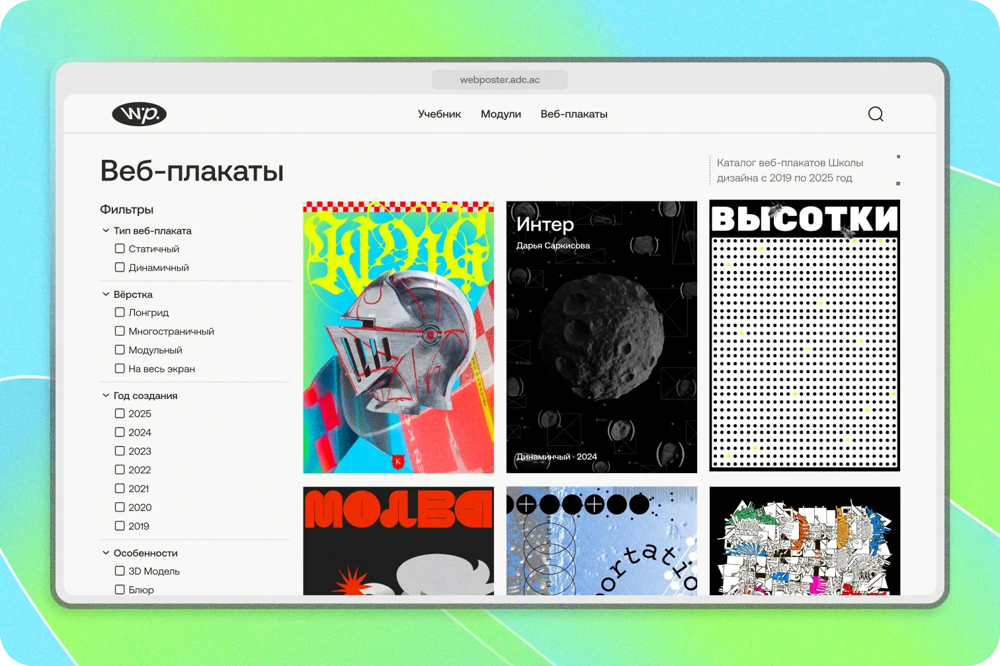
Интерактивный учебник веб-плаката по основам веб-вёрстки для дизайнеров
Как семь лет опыта Школы дизайна НИУ ВШЭ стали открытым учебником по веб-плакату, помогающему дизайнерам изучать основы веб-вёрстки
| Период | октябрь 2024 — июль 2025 |
| Моя роль | UX-UI, Разработка |
| Проект | Диплом |
Контекст
Веб-плакатом в Школе дизайна НИУ ВШЭ называют одностраничный сайт, на примере которого студенты первого курса направления «Дизайн и программирование» осваивают вёрстку на HTML, CSS и JavaScript. По сути, это тот же плакат, только перенесённый в браузер, поэтому он может развлекать, рассказывать историю или сообщать что‑то зрителю, оставаясь при этом полноценной страницей в интернете.
За восемь лет формат вырос из экспериментального упражнения в устоявшуюся учебную практику. Студенты школы сделали уже больше 500 работ, а каждый год через веб-плакат проходят более 11 групп с разных направлений. Когда‑то через него прошёл и я, поэтому, выбирая тему диплома, решил вернуться к формату и посмотреть на него с другой стороны.
Веб-плакат — недушный способ для дизайнера познакомиться с кодом
Захар День
Руководитель направления «Дизайн и программирование»Задача
При всей отлаженности программы знание о формате до сих пор живёт в устной форме, а местами его нет вовсе. Веб-плакат держится на кураторах, на их разборах, консультациях и советах в чате. Показательно, что даже преподаватели на мой вопрос «что такое веб-плакат?» отвечали после долгой паузы, а некоторые так и не находили ответа.
Поэтому задача была в том, чтобы перенести это устное знание в ресурс, которым можно пользоваться и без преподавателя рядом. При этом его не хотелось превращать в очередной курс по фронтенду, каких в интернете и так хватает. Иначе потерялось бы то, ради чего формат и придумывался, а именно свобода, игра, право на ошибку и авторская идея.
Исследование
Прежде чем писать учебник, нужно было разобраться, что это за формат, и обозначить его границы. Для этого я поговорил с четырьмя преподавателями, так или иначе связанными с веб-плакатом, и опросил 25 студентов об их вопросах и трудностях. Параллельно вручную разобрал работы 2019–2025 годов, а все находки собрал в исследовательскую книгу на 148 страниц.
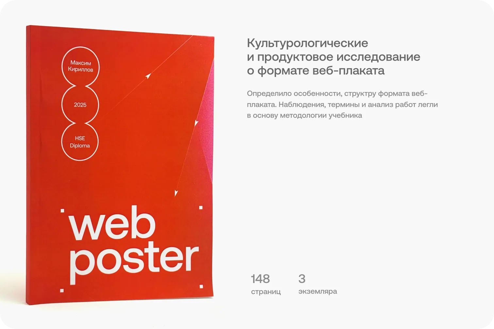
Идея
Если присмотреться, каждый плакат собран из повторяющихся приёмов, а значит, архив студенческих работ уже сам по себе оказывается учебным материалом. Оставалось разобрать плакаты на детали, показать, из чего они состоят, и дать код каждой из них.
Так получился учебник о философии и особенностях формата, в котором код появляется тогда, когда студент упирается в собственную идею.
Проблемы
Если присмотреться, каждый плакат собран из повторяющихся приёмов, а значит, архив студенческих работ уже сам по себе оказывается учебным материалом. Оставалось разобрать плакаты на детали, показать, из чего они состоят, и дать код каждой из них.
- Знания о формате доступны только рядом с преподавателем, поэтому забежать вперёд или разобраться в чём-то самостоятельно у студента почти не получается
- Время уходит на переизобретение приёмов, которые до тебя делали уже сотни раз, и на эксперимент его остаётся заметно меньше
- Сильные работы прошлых лет постепенно теряются, ведь обычно смотрят только плакаты последней пары лет
Решение
В ответ на эти проблемы появился статичный сайт из трёх разделов. Статьи учебника собирают теорию формата и делают её доступной в любой момент, библиотека модулей хранит готовые приёмы с кодом, а каталог возвращает в поле зрения работы 2019–2025 годов. Разделы связаны между собой, так что от любого плаката легко перейти к приёмам, из которых он собран.
Целевая аудитория
В первую очередь сайт сделан для студентов Школы дизайна и решает их локальные задачи. Вместе с тем ресурс устроен так, что разобраться в нём сможет любой, кто на него наткнётся, и через экспериментальный формат познакомиться с азами веб-технологий.
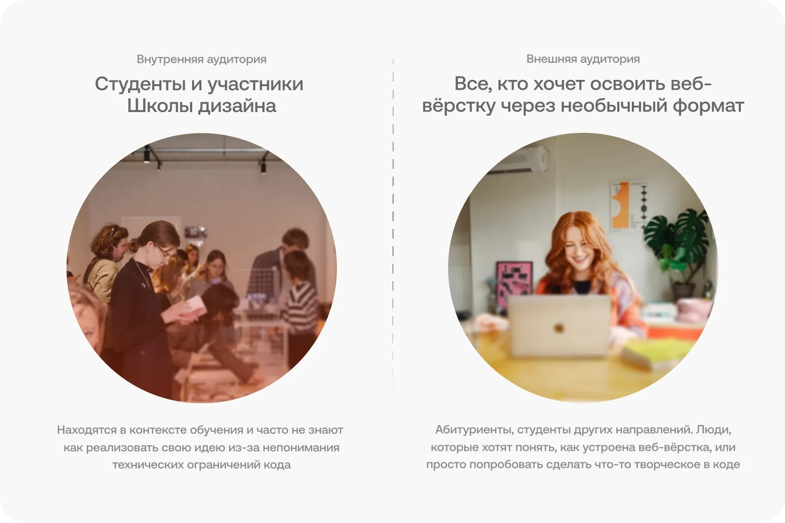
«Не учебник по коду»
Проект существует среди образовательных ресурсов, но напрямую с ними не конкурирует. Он бесплатный, некоммерческий и решает довольно узкую задачу, то есть собирает и передаёт опыт одного конкретного формата.
Курсы по вёрстке учат самой технологии, а этот сайт рассказывает, как с её помощью придумать и собрать собственный плакат.
Как узнают о проекте?
Продвижение держится на сарафанном радио внутри школы. В начале года преподаватель рассказывает о сайте первокурсникам, студенты передают его друг другу, абитуриенты узнают о нём на выставке печатных веб-плакатов, а оттуда он постепенно доходит и до внешних пользователей.
Такая модель бесплатна, не требует отдельной поддержки и опирается на людей, которым формат уже знаком.
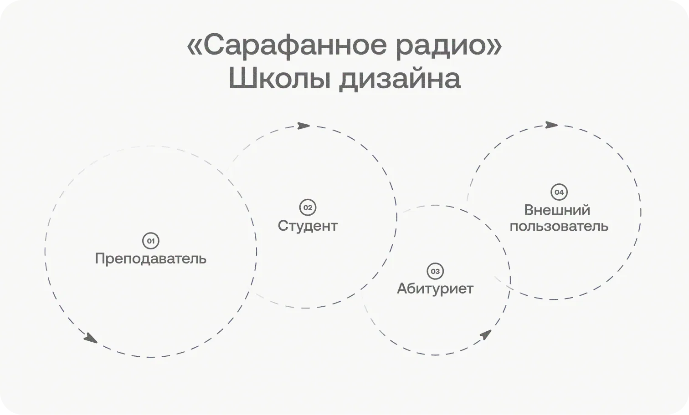
Цифровой продукт
Сайт состоит из трёх разделов, которые связаны между собой и повторяют путь студента во время работы над плакатом. Обычно всё начинается с поиска референсов в каталоге, затем студент разбирается в понравившемся приёме через библиотеку модулей, а когда хочется понять формат глубже, открывает учебник. Поэтому и рассказ о продукте выстроен в том же порядке.
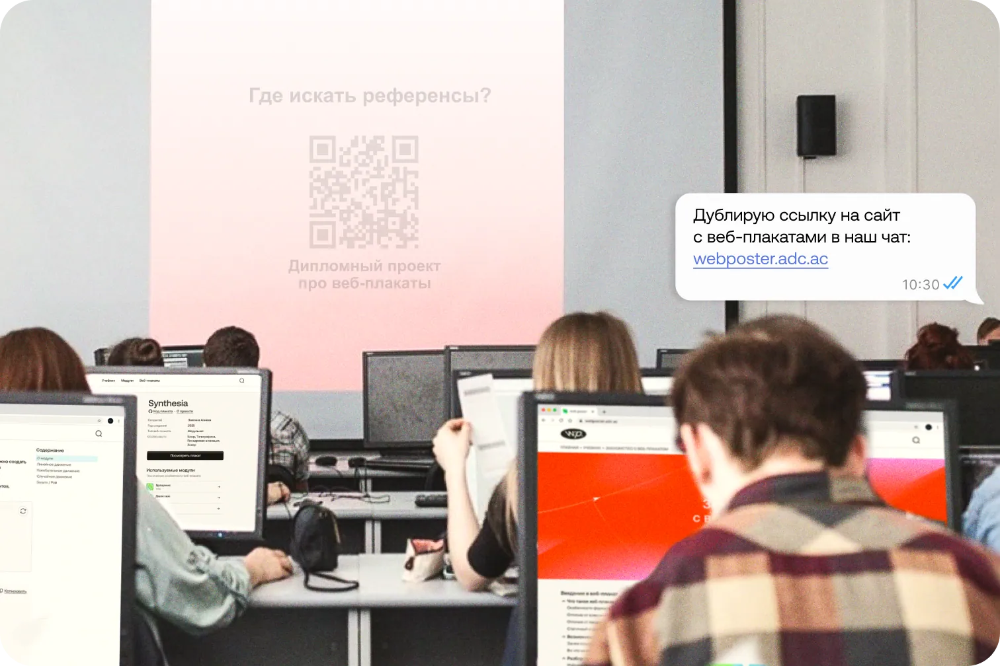
Каталог
Каталог собирает студенческие работы 2019–2026 годов и чаще всего становится первой точкой входа на сайт. Как правило, преподаватель просит к занятию собрать референсы, и студенты открывают сайт по ссылке из чата или по QR-коду на экране.
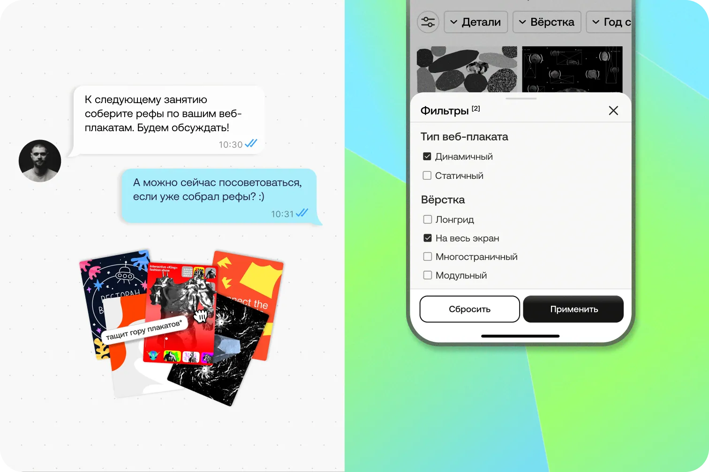
Чтобы не листать сотни плакатов подряд, работы можно отфильтровать по типу, вёрстке, году создания и техническим деталям.
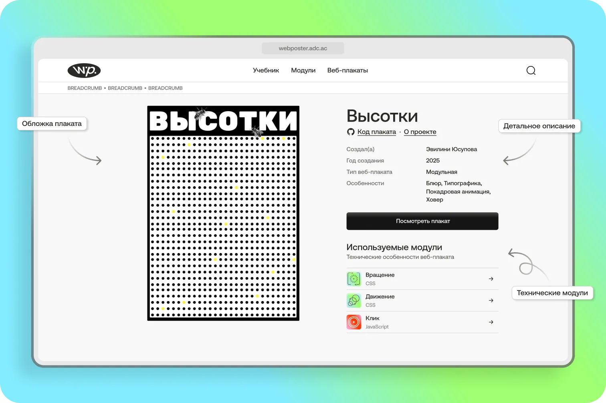
У каждой работы есть своя карточка с обложкой, автором, годом, описанием особенностей и ссылкой на исходный код. Ниже перечислены модули, на которых построен плакат, и, по сути, отсюда начинается переход от вдохновения к практике. Если зацепила анимация или необычная реакция на клик, можно сразу открыть нужный модуль и посмотреть, как это устроено.
Модули
Библиотека модулей хранит повторяющиеся приёмы, из которых собираются веб-плакаты. Модули поделены на статичные и динамичные, а внутри каждого лежит несколько решений на тему движения, вращения, трансформаций или работы с текстом. К каждому решению прилагается короткое объяснение, интерактивный пример и код, который можно скопировать в один клик.
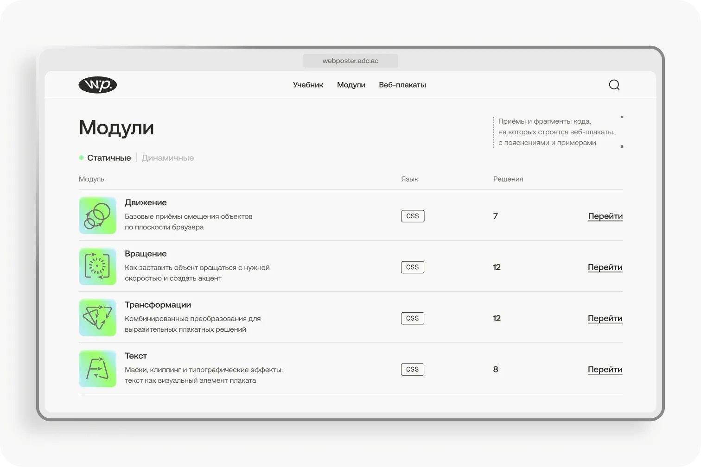
Интерактивный пример позволяет сначала потрогать приём руками и только потом разбираться в коде. Затем студент переносит фрагмент в свой редактор и подстраивает его под собственный плакат.
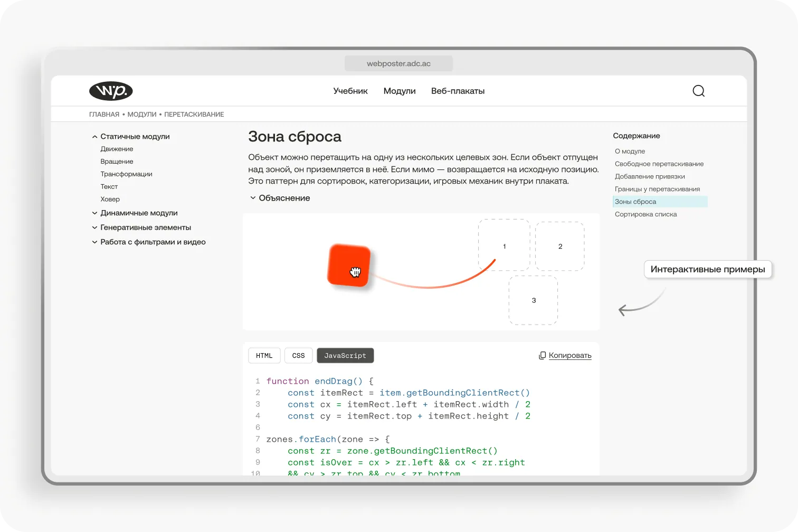
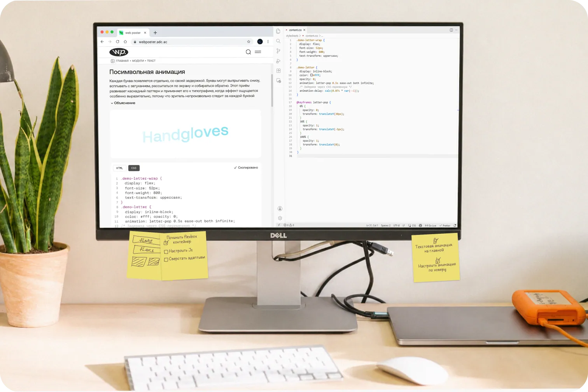
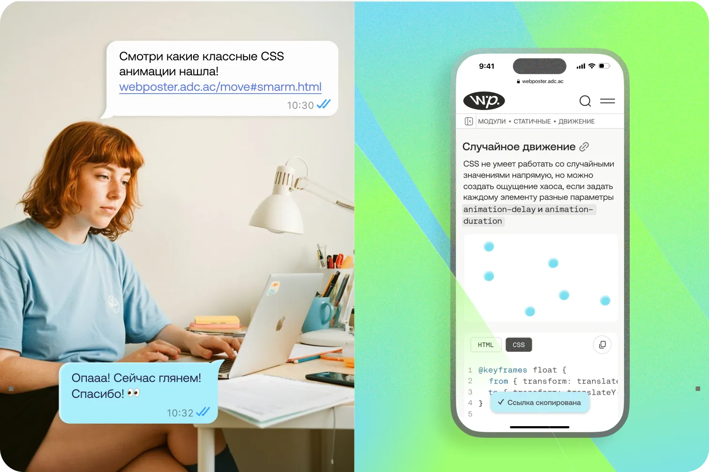
А если находка оказалась удачной, ссылкой на конкретное решение легко поделиться с одногруппником, так что сарафанное радио продолжает работать уже между студентами.
Учебник
Учебник отвечает за теорию формата и устроен как последовательный путь из двух частей. В первой разбирается, что такое веб-плакат и зачем его делать, а во второй описан весь процесс работы, начиная с идеи и макета и заканчивая анимацией, интерактивом и публикацией. У каждой статьи указано время чтения, а боковая навигация помогает не потеряться в главах.
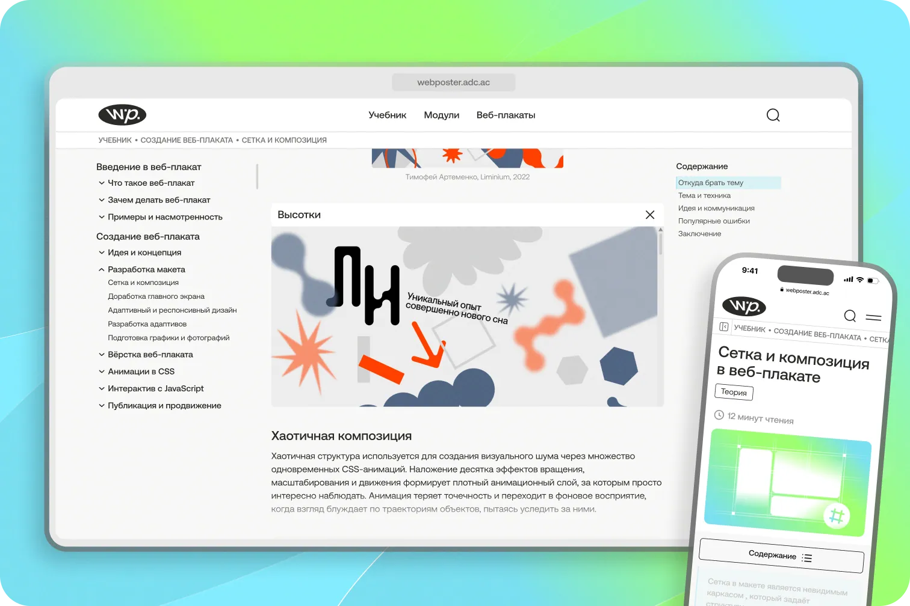
При этом теория в учебнике всегда опирается на живые примеры. В статьи встроены превью студенческих плакатов, которые открываются прямо на странице, поэтому описанный приём сразу видно в работе.
Так учебник замыкает связку с каталогом и модулями, а студент постепенно складывает цельное представление о формате и возвращается на сайт уже по собственному желанию.
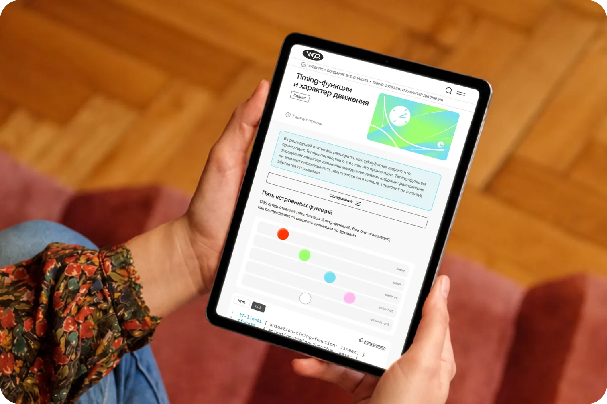
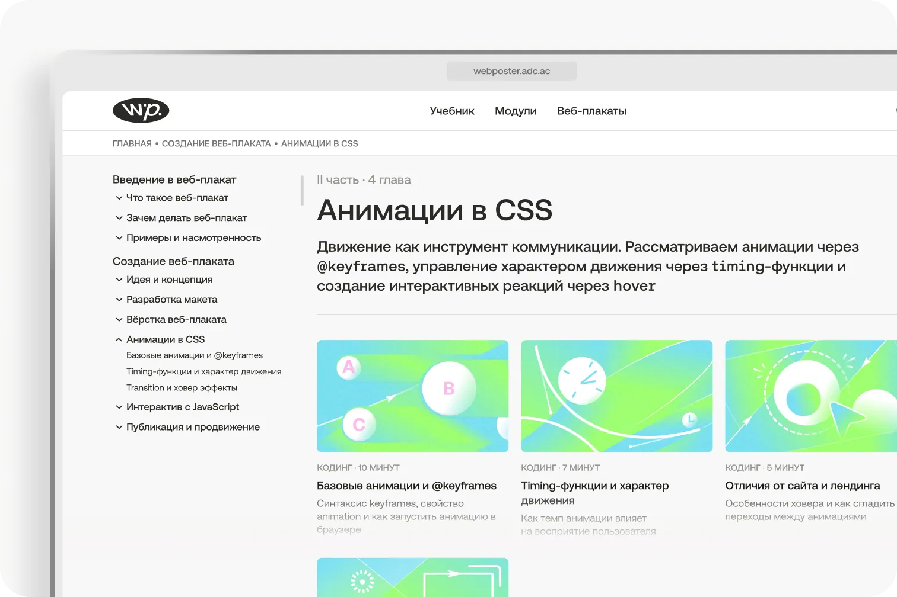
Материала в учебнике много, поэтому навигация повторяет его вложенную структуру. Статьи собраны в главы, главы объединены в две части, а боковое меню раскрывается до нужного уровня и всегда показывает, где сейчас находится читатель.
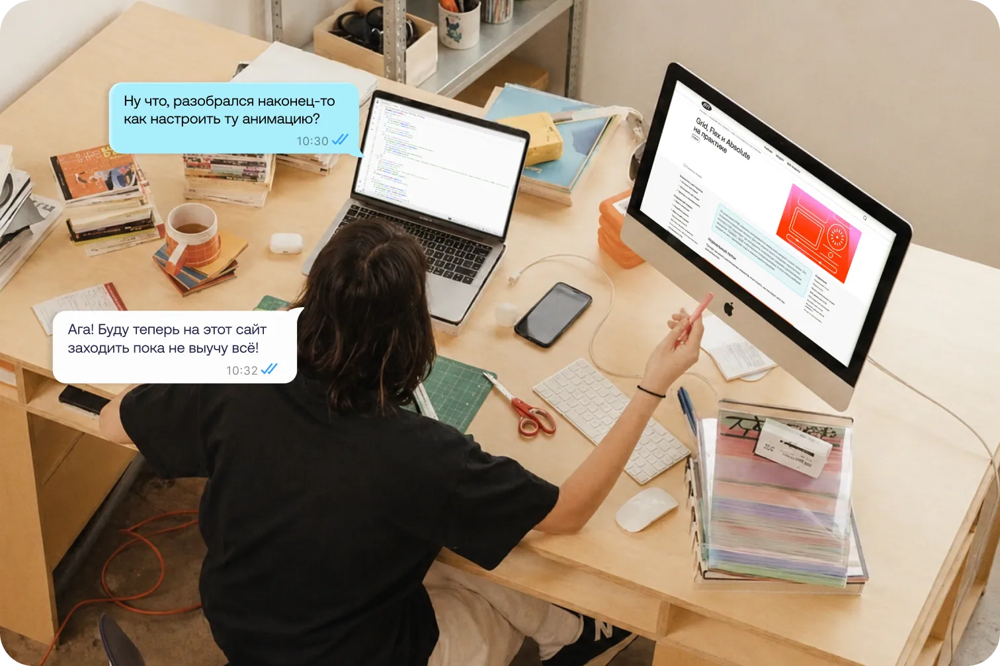
К учебнику студент может возвращаться, когда хочется разобраться в формате глубже или забежать вперёд программы.
Результат
Сайт запустился без отдельной рекламной кампании и продвижения в соцсетях, поэтому первые цифры собрались почти целиком за счёт сарафанного радио внутри школы.
По данным Яндекс Метрики, за два месяца сайт посетили 458 человек, а страницы просмотрели 4,8 тысячи раз. Среднее время на сайте превысило пять минут, и, судя по всему, люди действительно читают статьи и разбираются в модулях.
5,21 минуты
Среднее время на сайте
4,8 тысячи
Просмотров сайта
458
Уникальных пользователей
Серия обложек
Параллельно с текстами для учебника появилась серия из более чем 40 обложек к статьям. Все они собраны в общей графической системе проекта с градиентами и мягкими формами, а каждая иллюстрация в простом виде показывает тему статьи, будь то анимация, адаптив или сетка. Благодаря этому учебник легче листать, а сам сайт ощущается цельным и авторским материалом.
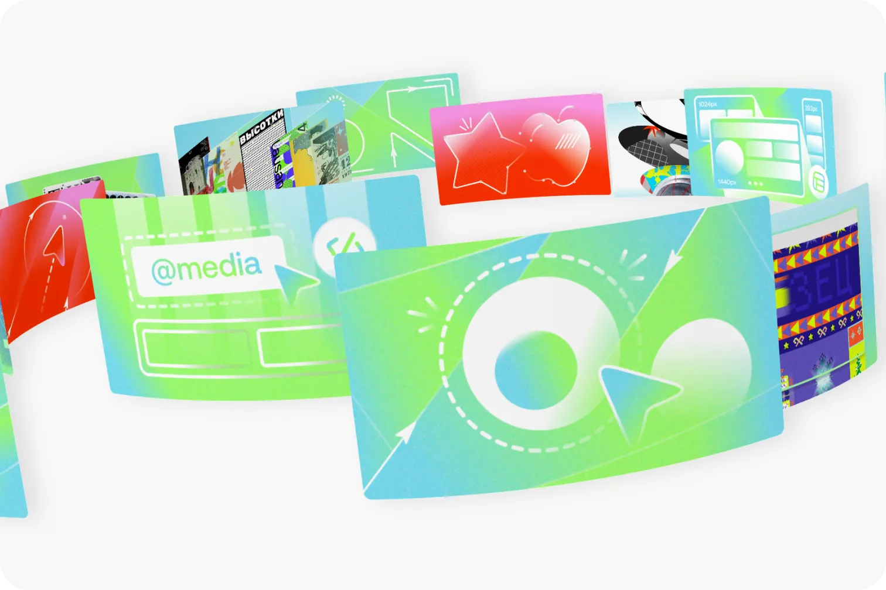
Вы сделали правда значимый проект не только для нашего компьюнити, но и для общего развития дизайн-образования
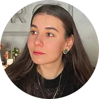
Анна Комкова
Преподаватель в HSE ART AND DESIGNЖивое выступление
Кроме того, проект впервые вышел за стены школы. В библиотеке «Светловка» я выступил с рассказом о веб-плакатах и о том, как устроен сайт, и формат увидела аудитория, которая раньше с ним не сталкивалась. Для проекта это стало первым шагом к внешнему пользователю, до которого по маркетинговой модели сарафанное радио доходит в последнюю очередь.
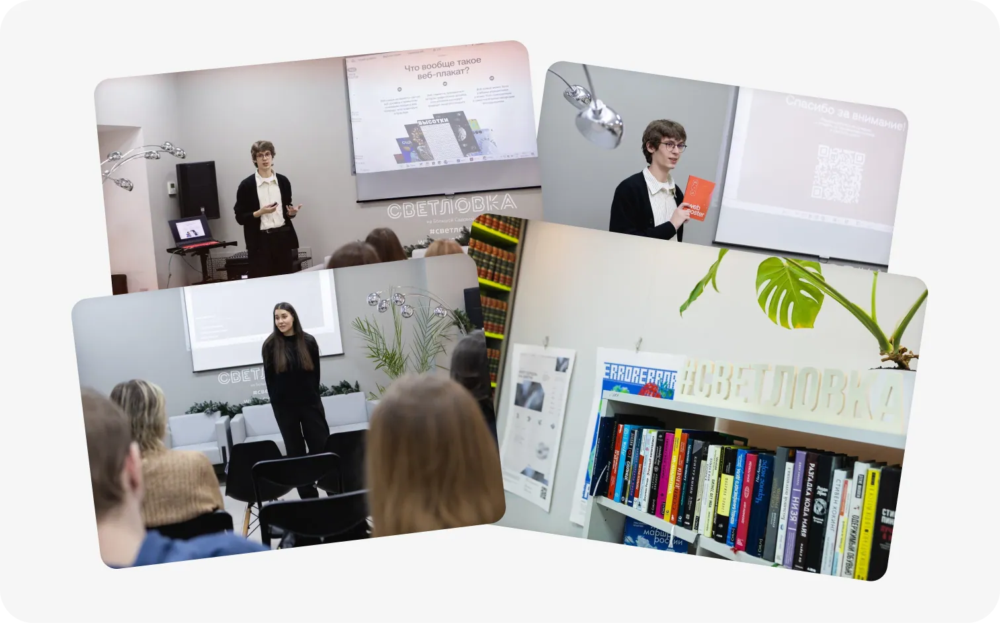